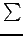
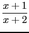
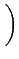
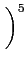
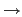
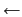
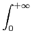
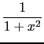

suivant: Les graphiques
monter: L'interface Xcas de giac
précédent: Les lignes de commandes
Table des matières
Index
L'éditeur d'expressions.
Un éditeur d'expressions se crée avant le niveau actif avec le raccourci
clavier Alt+e ou bien en utilisant le menu Expression,
puis Nouvelle expression.
Notez que Le clavier scientifique apparait automatiquement si vous
ajoutez un éditeur d'expressions. Il permet de saisir facilement
des intégrales (), limites, sommes ().
Vous pouvez alors écrire comme sur le papier vos formules : il suffit de
mettre les expressions en surbrillance au lieu de mettre des
parenthèses.
1ier Exemple
On veut écrire :


. 3 + 
On ouvre un éditeur d'expression (Alt+e)
puis on tape
-
x + 1
 (on met x + 1 en surbrillance soit a
vec la flèche vers le haut soit en le sélectionnant avec la souris)
(on met x + 1 en surbrillance soit a
vec la flèche vers le haut soit en le sélectionnant avec la souris)
/ (symbole pour la division) puis
x + 2
- * 3 + 4 / x
-
^ 5
Vous pouvez maintenant grâce aux flèches de déplacements parcourir
l'arbre associé à cette expression :
- permet de mettre en surbrillance la partie sélectionnée (un
membre d'une expression), l'opérateur qui concerne cette
partie et les autres membres de cette expression,
-
 permet de mettre en surbrillance le membre de droite de
l'expression sélectionnée
permet de mettre en surbrillance le membre de droite de
l'expression sélectionnée
-
 ou
 permettent de mettre en surbrillance l'autre
membre d'une expression que celui sélectionné
(le membre de droite si le membre de gauche est sélectionné et
vice versa).
- Ctrl-
ou Ctrl-
permettent d'échanger
la sélection avec le frère droit ou gauche.
2ième Exemple
Pour saisir :

on tape
- la touche du clavier scientifique ou Ctrl-S au
clavier ce qui saisit une intégrale indéfinie,
- la touche
, pour passer à une intégrale définie (pour
faire l'inverse on sélectionnerait chaque borne puis on taperait sur
la touche d'effacement Backspace),
-
, on remplace 0 par la fonction en tapant
1/(1+x^2) puis ,
-
pour sélectionner la borne supérieure,
- la touche du clavier scientifique pour remplacer le 1,
- la touche Enter permet alors de calculer l'intégrale.
Les autres touches spéciales dans l'éditeur d'expressions sont :
,: si une séquence est sélectionnée, ajoute un élément
initialisé à 0 à la séquence et sélectionne ce 0. S'il y a une
sélection autre qu'une séquence,
crée une séquence de taille 2 dont
le premier élement est la séquence, initialise à 0 le 2ème élément
de la séquence et le sélectionne. Il suffit alors de taper la valeur
du dernier élément de la séquence pour remplacer le 0. On peut
échanger un élément sélectionné dans une séquence avec son voisin avec les
touches Ctrl-
ou Ctrl-
.
(: si une séquence est sélectionnée, crée une fonction
utilisateur appliquée à la séquence et initialisée à f, il suffit
de taper le nom de la fonction utilisateur pour remplacer f.
Si un vecteur est sélectionné, il est remplacé par une séquence.
[: permet de transformer une séquence en vecteur. Si un
vecteur est sélectionné, crée un indice de vecteur, le nom de variable
est initialisé à m et sélectionné, il suffit de taper le nom
de variable pour remplacer m.
- les touches en combinaison avec la touche control
- A: sélectionne tout
- C: copie la sélection vers le presse-papier (à la windows)
- V: recopie du presse-papier (à la windows)
- T: traduit la sélection en LATEX et recopie dans le
presse-papier (on peut aussi voir le résultat en cliquant sur
le bouton
Msg)
- E: évalue la sélection (
eval)
- F: factorise la sélection (
factor)
- N: normalise la sélection (
normal)
- P: décomposition en éléments simples (
partfrac)
- I (ou touche Tab)
complète la saisie en cherchant une fonction dans l'index
dont le nom commence par les mêmes lettres
- S: saisie d'une intégrale
- L: saisie d'une limite
- D: saisie d'une dérivée
- Z: undo
- Y: redo
suivant: Les graphiques
monter: L'interface Xcas de giac
précédent: Les lignes de commandes
Table des matières
Index
Documentation de giac écrite par Renée De Graeve